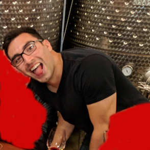

About Me
Last updated: Aug 24, 2024

Profession
I’m a software engineer at Google.
Jobs
- Surf Shack Software from Mar 11 2011 to Apr 18 2014.
- ChaiOne from Apr 21 2014 to Jan 29 2016.
- Google from Feb 29 2016 to the present.
- Google+ iOS from Feb 29 2016 to Jun 21 2019.
- Gmail iOS from Jun 24 2019 to the present.
TODO: How I got into computer science.
GitHub
Education
I studied Computer Science at CETYS Universidad (Tijuana campus) from 2008 to 2012.
I went to high school to “la Lázaro” (Preparatoria Federal Lázaro Cárdenas) from 2005 to 2008, taking the “Computing” specialty.
Personal Life
I was born December 15, 1989 in in San Diego, CA, but raised in Tijuana, Mexico. I also have Mexican citizenship via my parents. I can speak Spanish (first language) and English, and hope to learn Mandarin some day to be able to speak with over 20% of the world in their native language üòÅ.
I lived in Tijuana from birth to Jun 2012, Mount Shasta from Jun 2012 to Oct 2013, Chula Vista (San Diego) from Oct 2013 to Feb 2016, Mountain View from Feb 2016 to Jun 2022, and back again in Chula Vista since Jun 2022.
Interests
Outside of working, parenting, and doing chores, my interests include:
- Reading The Economist. I’ve had the digital + print subscription since Jun 2020 and try to read most of the articles from the weekly issue. I particularly like The Economist because it’s weekly (so easy to keep up with), has global coverage (so big bang for the buck), and aligns with my political views the most.
- Working out.
- Reading books.
- Playing Go.
- Golf. Mostly playing it, sometimes watching it. My favorite events are the 4 majors, the Ryder Cup, and LIV Golf.
- Computer science.
- Football (soccer). Mostly following it, sometimes watching it, but not playing it (too afraid of injuring myself). My favorite leagues/tournaments are England’s Premier League, the UEFA Champions League, and the FIFA World Cup. My favorite teams are Manchester United and the England national team.
- Watching YouTube, TV, and movies.
Why “cananito”?
They used to call my grandfather "Canano" because they thought he looked like he was from Cananea (no clue why). Then when I was a kid, a couple of family members thought I looked a lot like my grandfather, so they started calling me "Cananito", which is the diminutive form of "Canano" in Spanish.